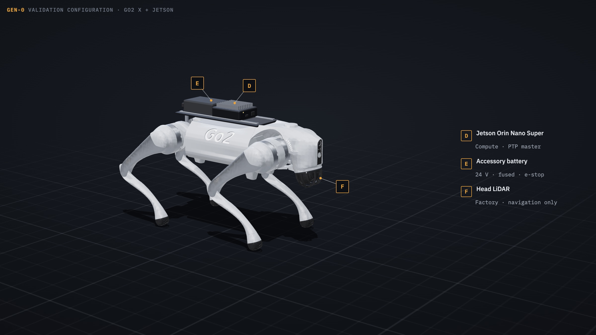
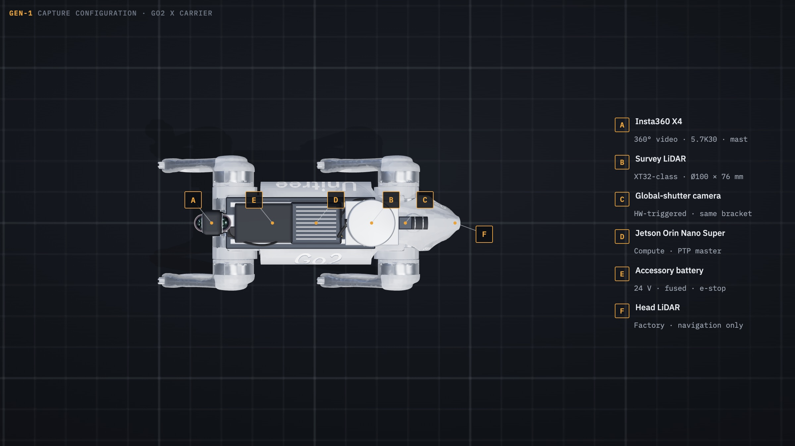
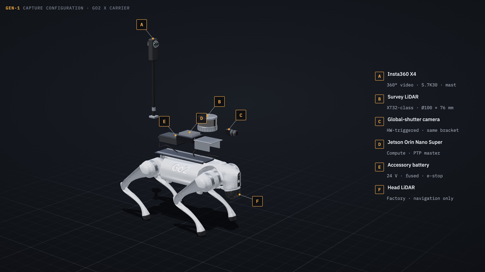
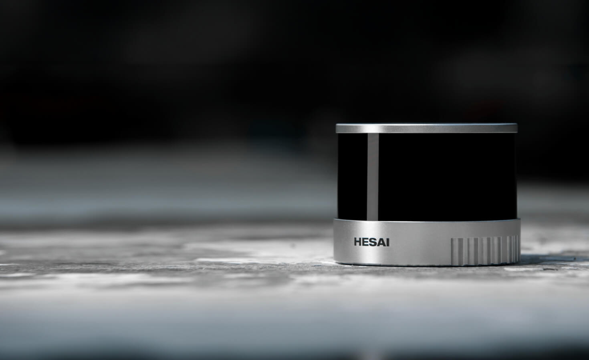
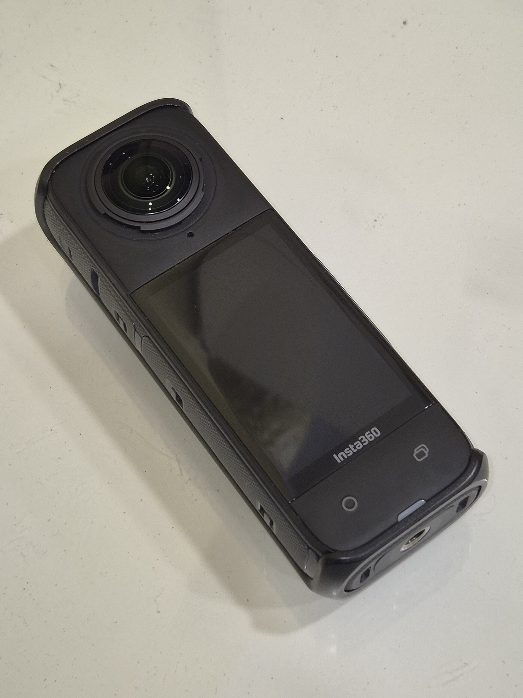
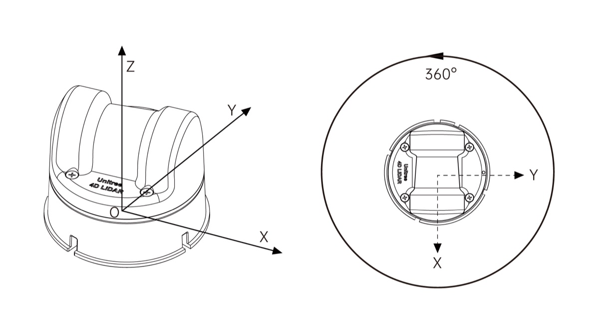

FU-SYS-001 · Payload
Payload configuration: Gen-0 vs Gen-1
| Element | Gen-0 (workflow validation) | Gen-1 (production payload) | Key specs |
|---|---|---|---|
| Survey LiDAR | Unitree L2: ≤2.0 cm, 64k pts/s, 30 m, 230 g, $419 | Hesai XT32M2X (PTP IEEE 1588v2), or commercial SLAM payload: Emesent Hovermap ST-X / Leica BLK ARC / XGRIDS K2 / CHCNAV RS10 | XT32M2X: 0.5 cm 1σ, ±1 cm, ~490 g · Hovermap ±10 mm indoor, 1.57 kg, 14–54 V · BLK ARC ±10 mm 1σ, 690 g |
| 360° camera | Insta360 X4: 5.7K30 High, shutter ≤1/120 s, FlowState off, rear mast 25–40 cm | ~135 min at 5.7K · ~42 GB/h | |
| Forward camera | None (or action camera for visual record only) | Teledyne FLIR Blackfly S GigE BFS-PGE-50S5C-C (5 MP colour, global shutter), PoE + IEEE 1588 PTP | $878 · max 3 W · 8–24 V or PoE · ~2 fps JPEG ≈20–30 GB/h |
| Compute | Jetson Orin Nano Super Developer Kit (945-13766-0000-000), 8 GB | Seeed reComputer Robotics J4012 (Orin NX 16 GB, 19–54 V in) or Neousys NRU-220S (AGX Orin, 8–48 V, 4× PoE+) | Dev kit 7–25 W, 19 V barrel · J4012 ~$1.4–2.6k · NRU-220S from $5,060 |
| Storage | 1 TB NVMe | 1–2 TB NVMe | Raw: 0.4–0.7 TB per field day (est.) |
| Power | 24 V ~200 Wh pack, 19 V + 12 V bucks, inline fuses, e-stop | Bioenno BLF-2410A 24 V 10 Ah LFP (2.4 kg) or Core SWX Helix Max dual-voltage; fused PDB with latching e-stop | BLF-2410A $189.99 · Helix Max quote · PDB quote · payload 60–80 W (est.) |
| Network | 12 V unmanaged 5-port GbE switch | Jetson PTP master cabled directly to the Blackfly S (no switch in the timing path); PTP switch only if required (Moxa EDS-405A-PTP 10/100, ATOP EHG7504); M12 X-coded Ethernet; IP-rated enclosures | EDS-405A-PTP $1,255.79 · EHG7504 quote · M12 $73–80 each · enclosures quote |
| Carrier | Unitree Go2 X: 15 kg, 8 kg rated payload, ~16 cm max step, 5–35 °C, no IP rating | Gen-2 carrier selected at G3 (§14) | |






